"The Goddesses of the Ocean"
From "Marvelous Dwellers" Series
Something that makes our life more precious is the certainty that someday we all will die. That prompts the core tenet of making our footprint meaningful, of living our life in a way that our friends may remember us with a warm-heart, with a candid smile on their face…
I suppose that the same reason is what makes us to be obsessed with death. Nobody knows what happens after, if there is another experience of life or a complete nothingness… Some people are very afraid of that moment. And somehow, we try to avoid as much as we can that irreversible instance in which our life ends. We address too many economic resources to the discovery of the secret of youth, to figure it out what could prolong our life, how to be closer to immortality.
But why? After all, the pass of every single living being in the world is just transitory…
Except…
Except...

I suppose that the same reason is what makes us to be obsessed with death. Nobody knows what happens after, if there is another experience of life or a complete nothingness… Some people are very afraid of that moment. And somehow, we try to avoid as much as we can that irreversible instance in which our life ends. We address too many economic resources to the discovery of the secret of youth, to figure it out what could prolong our life, how to be closer to immortality.
But why? After all, the pass of every single living being in the world is just transitory…
Except…
Except...
… Except that we were speaking about Turritopsis nutricula, Laodicea undulata, Aurelia sp. or Turritopsis dohrnii.
Yes! Once more, the world shows us its advantage over us… There’s nothing we want to do, that Planet Earth hasn’t done first.
I didn’t mean to spoil the philosophical beginning of this post. In fact, I’m deeply involved in this topic and very against the disavowal of mortality, but I decided not to enter into its swampy and meandering discussion. Instead I will focus on these amazing species, the gooddesses of the ocean:
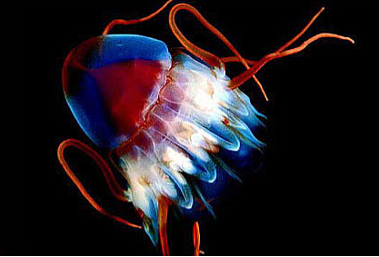 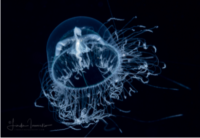 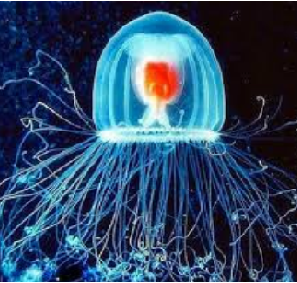
Yes! Once more, the world shows us its advantage over us… There’s nothing we want to do, that Planet Earth hasn’t done first.
I didn’t mean to spoil the philosophical beginning of this post. In fact, I’m deeply involved in this topic and very against the disavowal of mortality, but I decided not to enter into its swampy and meandering discussion. Instead I will focus on these amazing species, the gooddesses of the ocean:
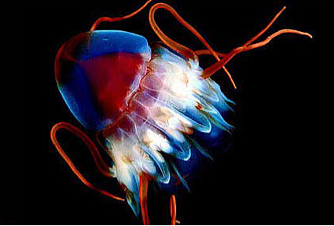 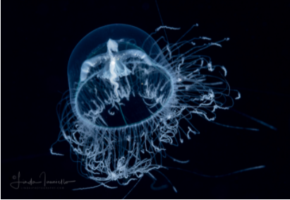 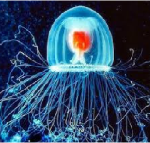
Turritopsis nutricula - Laodicea undulata - Aurelia sp. & Turritopsis dohrnii
They arrived at the stardom as “the immortal jellyfishes”, but they resemble more to a genuine Benjamin Button case, given the fact that they reverse their adult age to the polyp stage and start over. To go deep, they can “rejuvenate” in any moment of their life, several times, and in each one, the genetic code is exactly the same as the original.
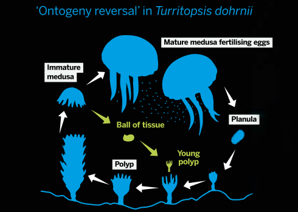
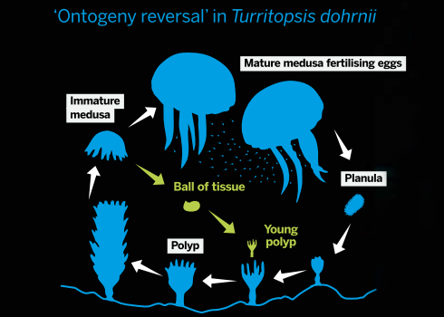
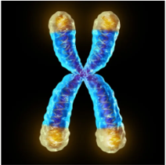Meanwhile, although the research about longevity has advanced a lot and we know how it happens (the shortcut of the telomeres, DNA at the extreme of the chromosome that is lost with each cellular division and eventually conduct to senescence) we can’t emule what immortal jellyfishes do and we are fated to die when we have to. I’m sorry for the (old) news!
 When the jellyfishes of these species are physically damaged, are weakened by age or experience stresses such as starvation, instead of dying they unfold a phenomenon called "Transdifferentiation", through which they change the type of cell and become a polyp again. Basically, they shrinks in on themselves, reabsorb their tentacles and lose the ability to swim, remaining attached to the marine surface in a juvenile polyp state.
When the jellyfishes of these species are physically damaged, are weakened by age or experience stresses such as starvation, instead of dying they unfold a phenomenon called "Transdifferentiation", through which they change the type of cell and become a polyp again. Basically, they shrinks in on themselves, reabsorb their tentacles and lose the ability to swim, remaining attached to the marine surface in a juvenile polyp state.
Yes, it's a match against time that humans are loosing (luckily for the cosmetic industry). See a jellyfish showing off herself and making fun of us!
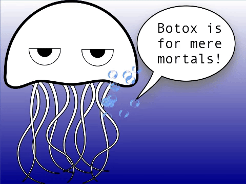
When the jellyfishes of these species are physically damaged, are weakened by age or experience stresses such as starvation, instead of dying they unfold a phenomenon called "Transdifferentiation", through which they change the type of cell and become a polyp again. Basically, they shrinks in on themselves, reabsorb their tentacles and lose the ability to swim, remaining attached to the marine surface in a juvenile polyp state.Yes, it's a match against time that humans are loosing (luckily for the cosmetic industry). See a jellyfish showing off herself and making fun of us!
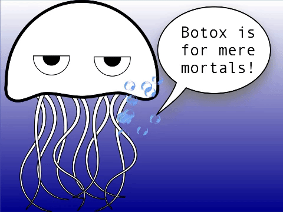
If I had been asked, I wouldn’t have chosen these species to be immortal. I would rather have the eternal company of my childhood’s dog (snif, snif) -and more if that would have meant that he was going to be a puppy again and again!- (imagine my happy face right now).
Nevertheless, the slow rhythmic movement of the jellyfish propulsing itself in the water makes me fall into a musicalized fantasy that conveys me peace and quietness.… I chill out and float, balancing unwillingly under the effects of the streams, dancing vals with the ocean... And I find it very hypnotic and beautiful…
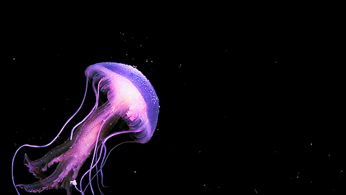
Nevertheless, the slow rhythmic movement of the jellyfish propulsing itself in the water makes me fall into a musicalized fantasy that conveys me peace and quietness.… I chill out and float, balancing unwillingly under the effects of the streams, dancing vals with the ocean... And I find it very hypnotic and beautiful…
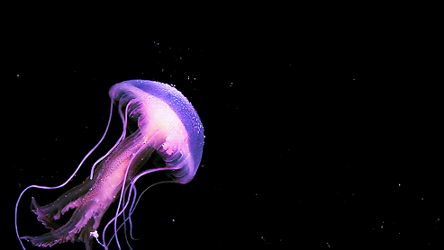
Now, let’s stop the swinging, leave my imagination behind and come back to reality. In spite of this crazy circle of life in which jellyfishes were prized, they can, in fact, die. Don’t fool yourself, then!: if you have a second chance to be here, and by serendipity, you reborn being an “immortal” jellyfish, bear in mind that you are a dessert for whales, sharks, marine turtles, crabs, some marine birds and even some fishes. So, run jellyfish, run!
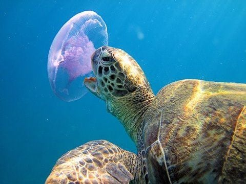
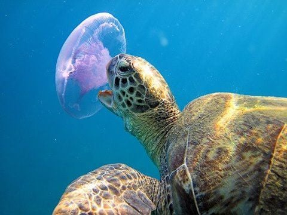
After that awkward reference to Forrest Gump, I want to make it clear for you: unfortunately, these “immortal” jellyfishes usually have a very short life in nature.
I guess that it seems to be a bad joke of destiny, but that makes sense for me… A life lacking risk doesn’t sound too much to be living...
Maybe it’s better just to be a mortal human after all: we have more time to discover all the marvels that the world has hidden at the view, like these adamant jellyfish that refuse to die and live like goddesses instead, challenging the first biological principle, that one day we all will breathe our last.
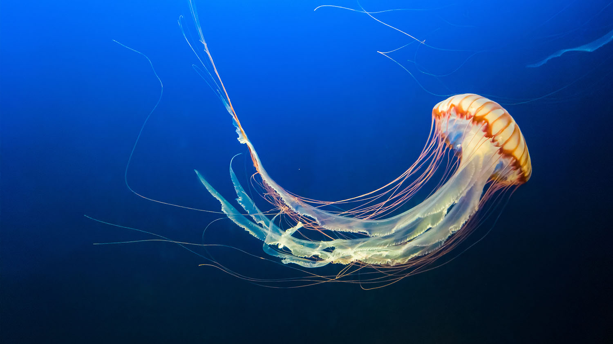
The end…
I guess that it seems to be a bad joke of destiny, but that makes sense for me… A life lacking risk doesn’t sound too much to be living...
Maybe it’s better just to be a mortal human after all: we have more time to discover all the marvels that the world has hidden at the view, like these adamant jellyfish that refuse to die and live like goddesses instead, challenging the first biological principle, that one day we all will breathe our last.
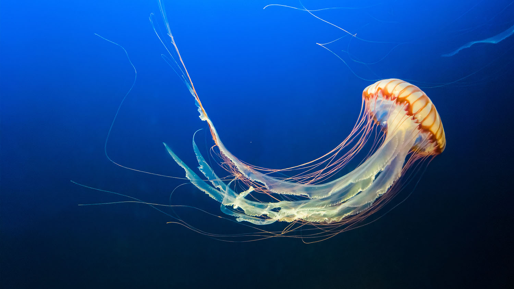
The end…
Thank you for reading me!!
I really wish that you have relished my work. I not only wrote the text but also coded the webpage and its design. The challenge is big, but I'm an enthusiastic learner.
Please give me your I LIKE and SHARE the publication to expand the community of MARVELOUS DWELLERS! If you access through a computer, remember you can leave your comments at the end of the page. Or you can send me an e-mail, if you want!. Either way you choose, I would appreciate a lot your support!.
If you liked the topic, I invite you to read the bonus content below.
These jellyfishes not only share the amazing hability of "reset" themselves to avoid any surrounding risk. They also are very aggressive invaders. It's believed that immortal jellyfishes are from the Mediterranean Sea, but nowadays they are found in all the oceans.
Nevertheless, we seem to be the reason of this strong spread. It turns out that jellyfishes take advantages of "hitchhiking" in ships to disperse their genes all around the world.
I really enjoyed this piece of information because traveling and knowing new places are amazing things to do if you have an neverending life. And more if it's free of charges!!!
Without further to do, I say goodbye for now! Until the next post!
Some sources:
"The Immortal Jellyfish" by The American Museum of Natural History
"Immortal jellyfish: the secret to cheating death" by Natural History Museum
"Can a Jellyfish Unlock the Secret of Immortality?" by New York Times Magazine
"Everlasting life: the ‘immortal’ jellyfish" by The Biologist
Nevertheless, we seem to be the reason of this strong spread. It turns out that jellyfishes take advantages of "hitchhiking" in ships to disperse their genes all around the world.
I really enjoyed this piece of information because traveling and knowing new places are amazing things to do if you have an neverending life. And more if it's free of charges!!!
Without further to do, I say goodbye for now! Until the next post!
Some sources:
"The Immortal Jellyfish" by The American Museum of Natural History
"Immortal jellyfish: the secret to cheating death" by Natural History Museum
"Can a Jellyfish Unlock the Secret of Immortality?" by New York Times Magazine
"Everlasting life: the ‘immortal’ jellyfish" by The Biologist